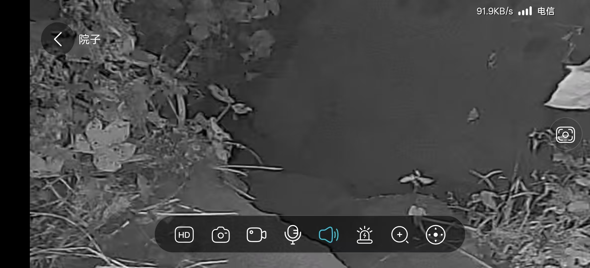

20260910双盘加持印两个小时 约束自己，降伏自己
符咒术法 原始对话记录双盘加持印两个小时
不止腿疼，
手也疼
不容易啊
约束自己，降伏自己
[强]

以前，种西瓜的苗棚
角上一个大洞
有人见是一只獾
已经住了十二年了
今下午回去，装了个监控
看看是什么样子的
[呲牙][呲牙]
据说很大个
以下为编者整理的主题文章
编者整理 · 主题文章
双盘两小时，手也疼
导读：这页只有十四行。双盘加持印两个小时，不止腿疼，手也疼。一句"约束自己，降伏自己"。再往下，是一棚西瓜苗，一个大洞，一只住了十二年的獾。
这页一共十四行。
头一行："双盘加持印两个小时。"接着三行："不止腿疼，""手也疼""不容易啊"。再一行："约束自己，降伏自己。"
然后画面就转了。
"以前，种西瓜的苗棚，角上一个大洞。有人见是一只獾，已经住了十二年了。今下午回去，装了个监控，看看是什么样子的。"
最后一句："据说很大个。"
腿疼手疼，和一只獾，写在同一页上。记录没有解释这两件事的关系。
别的页里，双盘还有几句。有人双盘半小时还一直在喊腿疼，被人回了"无用功，只能算基本功，还不扎实"。另一页把话说得硬一些："双盘的重要性，严格要求自己，降伏自己的内心，一切欲望都要降伏。"
加持印是手印。两个小时坐下来，腿上疼，手上也疼。记录没往下说。
那只獾住了十二年。苗棚的角上，一个大洞。
说明与免责：本站为民间修炼、民俗文化与传统文化资料的整理与记录，内容源自传承者口传与个人修习体会，仅供文化交流与研究参考，不构成医疗、健康、投资或任何功效承诺。所述内容属传统术数范畴，请理性看待；如身体不适，请及时就医。请遵守法律法规与公序良俗。